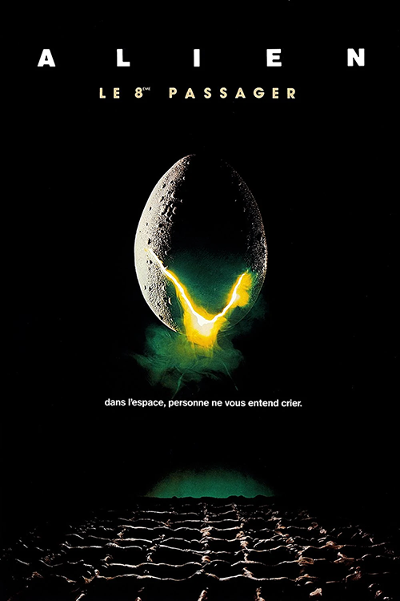

Jerry Goldsmith est un compositeur américain qui est connu pour ses
musiques de films. Il a reçu neuf Golden Globe Awards et dix-huit Oscars.
Il a composé (pour n’en citer que quelques-unes) les musiques de:
La
Planète des singes, Mulan,
La Momie, Star Trek,
Rambo et bien plus encore.
Il a appris à jouer du piano à six ans.
«Je pense que la grande partie de la créativité est de surmonter la peur. La peur est une évidence. Lorsque vous vous asseyez et que vous devez commencer quelque chose, n'ayez pas peur d'être rempli de peur, car cela va avec la création.»
 affiche de 1979
Le film met en scène cinq garçons et deux filles plus un chat, passagers d’un vaisseau spatial. Les passagers étaient tranquillement en hibernation en attendant d’arriver sur la Terre mais ils se sont fait réveiller par l’ordinateur car ils ont reçu un message de présence de vie, venant d’une autre planète. Les passagers partent à la recherche de ce signal en pensant que c’est un appel à l’aide, mais est-ce vraiment le cas?
Les musiques du film sont métalliques, très froides et atmosphériques. Elles ont comme but d’évoquer le vide spatial qui isole les personnages.
A New FaceRéalisateur de Alien, le huitième passager.
«La vie a plus d'imagination que n'en portent nos rêves.»